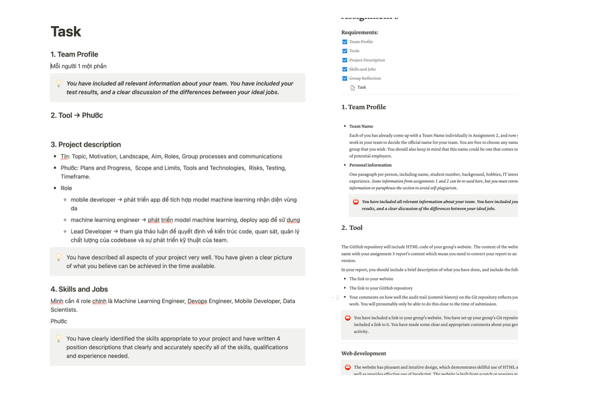

1. Team Profile
1.2 Team Name
Team 2
1.2 Personal Information
Tong Thien Phuoc
Do Thanh Tin
2. Tool
The website of our group page uses simple HTML, and CSS code to show our report simply. It shows a report on Our IT Project, Assignment 3. With CSS we style our website with a background image, a banner of the COSC2083 course on the top that we can click to go to the Canvas course site, including a table of contents that can get to the right part after clicking on the title and it always stick to the left of the pages so that we can easily go to the part that we want when we scrolling down. With Javascript, I coded a function for the button that can show more sub-pages in the team profile and project description.
Git has facilitated our process to build the website, we easy to maintain and control the version of our website code. Based on the git log we can see that our process work was very well, It helped us to check others' progress quickly when working on the group project, and submit our work easily. Everyone has contributed their part by pushing it onto the GitHub repository. After finishing the assigned task, we use git to push our work onto the git repository and create a pull request, so that the team leader can check and merge the work into the main branch.
1. Website link: https://tphuoc04.github.io/OurITProject/
2. Github Repository link: https://github.com/tphuoc04/OurITProject
3. Project
3.1 Overview
3.1.1 Topic
We plan to create a computer-based system for the analysis and diagnosis of skin pathologies as part of our research. The main goal is to develop a powerful tool that can help people accurately detect and classify various skin disorders. As a result, the diagnostic process will be much more accurate and efficient, resulting in better patient outcomes.
The system will be designed to visualize skin lesions and extract important details including color, texture and shape. Matchable properties are then found by comparing these properties with an extensive database of skin diseases known to exist. The system will be trained to detect patterns and make accurate predictions based on input data using machine learning. As a result, the system should be able to generate a list of potential diagnoses along with pertinent data and suggest therapy.
3.1.2 Motivation
For early detection of skin diseases and treatment, skin diseases must be applied to clinical practice. Making the right treatment decision for a patient depends on an accurate and prompt diagnosis. However, a wide range of skin problems and similarities in appearance make it difficult to understand skin conditions. Therefore, the goal of our project is to develop a reliable tool that can help dermatologists make informed choices.
3.1.3 Landscape
Our solution will help reduce stress on dermatologists and increase the overall efficiency of healthcare delivery by automating the analysis and detection of skin problems. Strong. In addition, it will be a useful resource for medical practitioners in isolated or hard-to-reach locations where a dermatologist's accessibility may be limited. Overall, the use of skin pathology in our project has the potential to radically transform dermatology practice and dramatically enhance patient care.
3.2 Detail Description
3.2.1 Aims
The skin issue is quite prevalent, but there are additional unrecognized high predictors as well as a scarcity of dermatologists, general practitioners, and nurses who may need assistance in making the best choices. Plus and save. set out to see if artificial intelligence can come up with a brief list of symptoms that caretakers should take into consideration. By exposing a neural network to 16,114 instances gathered from a remote skin discovery practice, they taught it to anticipate the 26 most prevalent symptoms using deep learning. Each instance is linked to numerous photographs rather than just one, which enables the system to pick up on subtle differences. The accuracy of artificial intelligence (AI) predicted outcomes was then compared with 963 cases handled by board-certified dermatologists, general practitioners, and nurses. confirm. The system performed better than primary care doctors (44%) and nurses (40%), giving accurate predictions 66% of the time, matching dermatologists' accuracy rate of 63%. The algorithm's accuracy improved to 90%, beating even that of the skin physicians (75%), when asked to provide an analytical expectation that included the three most likely wants. This tool is accurate regardless of the tale or race because of the range of fields employed in the trainer, both in terms of patient condition and demographics.
The capacity of a single engine to forecast 26 different states may alter how state data is categorized, even when AI has already been trained to anticipate certain states. By enabling primary care doctors to encourage referrals, this might have a particularly significant impact in remote locations where dermatological patient referrals may be challenging. make a choice. To define instantaneous action, define definition. When the top three ailments listed by the tool have the same standard of care, treatment can start right away. Expect focused follow-up to be feasible in cases when the severity of the first three problems or the suggested therapies vary, giving patients speedy access to the right care. Despite the fact that this device hasn't been given clinical approval.
We place a lot of emphasis on the data saved in the application while creating dermatoscopy software. The camera system on many modern electronic devices has been enhanced, which has considerably aided the system's comparison and analysis of data warehouses and allowed for the identification of many elements that lead to the victim's skin damage. It is incredibly daunting to be able to acquire and maintain data regarding the knowledge and causes of dermatological illnesses. We have concentrated on processing the memory of the system using a variety of code sequences in order to be able to give comprehensive information on illnesses, and we are grateful for the support of software that continuously downloads and compresses data to aid the memory system. The user is more comfortable since the memory of their gadget just has to consume a small portion of the main gram of memory. Our solutions will work considerably more efficiently for consumers thanks to the augmentation and decompression of all the data, and they won't have to spend as much time trying to figure out what's causing their skin issue right now. by combining various data and contrasting while providing users with realistic outcomes.
3.2.2 Plan and Proress
The idea to build an application that will help people detect skin diseases people suffer from came to me a long time ago. The application aims to help people know about their condition to prevent potential consequences of skin diseases, I realize many people are suffering from skin diseases that could potentially cause harmful impacts on their health, but they are not aware of that, I was in this condition. I suffered from a strange skin disease that caused me sudden hearing loss in my left ear just because I was not aware of its potential consequences. This makes me want to make a product to help people, based on the symptoms of the skin application will provide information about the treatment of different conditions, their skin condition, what they suffer from, what it may cause to their health, how to prevent it in the future, and what needs to be aware of. The application helps people to detect their skin condition simply by taking a picture of the suffering skin and algorithms to detect the disease. To make this idea work in code, the power of machine learning came to me, more specifically computer vision, nowadays the rise of AI and its application is in a very wide range in many fields, and utilizing its capability is a great way to improve the performance of our product. To make this easy for people to use and save labor, I think of React Native as the framework we will use to develop an application for many platforms, from iOS to Android OS, this helps people easily download and use on any platform. The plan to develop is divided into two main parts, develop the machine learning model and develop the application to deploy the model in the product.
The most difficult part is developing the machine learning model. With this, we encountered many problems, such as finding the best approach, collecting data, and preprocessing the data. This is the part that we will spend most of our time on, We had made many changes to our approach before coming to the final decision due to our current ability, and the data set that we can collect. There are multiple parts to developing a model that works well on our given task.
First, to develop a model that can detect skin conditions precisely our primary goal is to achieve high accuracy in classifying skin disease images. Convolutional Neural Network (CNN), which is a neural network architecture that is very effective in image classification, is our best approach due to its famous for classifying images. With the help of the community, we can use transfer learning and fine-tuning, a technique that involves taking a pre-trained neural network and replacing the output layer to classify the skin disease image, which means it will be easier and more efficient for the model to learn from data features than learn from scratch. This approach is very effective in our case due to the complexity of our data set which is images of skin, and facilitates our progress in developing the machine learning model. Choosing an architect for our neural network that is large enough to train and effectively classify images is the first part that we have done on our model. With the chosen architecture and transfer learning method this is what we will work on, a pre-trained model VGG-16, a standard deep Convolutional Neural Network (CNN) architecture with multiple layers. To accomplish this we use Keras, a popular deep-learning library that provides an application programming interface (API) for using pre-trained models.
Second, collecting data was the most difficult part that we encountered in the progress of this project. Finding large enough images about skin disease is not an easy task, after finding many resources we luckily found a data set of Dermnet, a free dermatology resource website. This data set is available on Kaggle, a data science community that provides many data sets and tools, with total images of around 19500, has been split around 15500 into a training set and the remaining into a test set. The Dermnet is a very valuable data set for me to first train my model. After finding the data set, the next step is to preprocess the data to use in training. To train a model, it is very crucial to preprocess the data appropriate to train. For a complex image such as a skin disease, the data set of Dermet is already well cleaned and labeled, here the work we need to do with the images is to resize them into the same shape as 244x244 pixels and normalize all the values of images for further training, this will help to converge the parameter faster. Collecting data for training a machine learning model, particularly for skin disease images, is not an easy challenge. However, the Dermnet dataset significantly facilitates our progress by processing the data we don't need for manual data cleaning and labeling. With this robust training dataset in hand, our next steps involved augmenting the dataset with additional data and fine-tuning model parameters to fit our skin disease classification task.
After collecting and preparing the data set, now we construct our machine learning model and start to train. I have used the pre-trained model VGG which is provided through Keras API, a deep learning API that is written in Python and constructed by François Chollet. This has accelerated our development process of the model quickly by using transfer learning and fine-tuning methods. But when doing this we realized that we didn't have a data set that was large enough for the model, then we decided to add more data using data augmentation, This is a method in which we use existing pieces of images and modify them for example mirroring, shrinking images to get a new piece of images. Data augmentation is very helpful. This is the stage where we train and evaluate our machine learning algorithm, to see if it is at our expected accuracy or not.
At this far of the progress, the Machine learning model has been trained and can detect an image of infected skins. Now we need to integrate it into a production. We want our application easy for everyone easy to use and reach, with React Native, an open-source framework to build cross-platform apps created by Meta, we accomplished this just with one source code that helped us to develop both iOS app and Android app so that accelerate our project. Our app helps with a simple UI that can be easily used by everyone, as this far-building app deploys our model into a Flask app for easy use as a side server.
An application of a machine learning model that can detect skin disease is not new. Our application tries to use the best approach to detect skin diseases that can detect as accurately as humans can. From constructing and training a machine learning model, and building an application that we can integrate our model into to deploy it in the product, We try to make the plan as precisely as how we will do in this project. With many technologies that we will use in this project to facilitate our project, this will make my idea to help people know about their condition become real.
3.2.3 Role
Applications in skin pathology perform a variety of significant functions in the therapy of skin disorders. It begins with compiling and organizing data on symptoms, manifestations, and indicators of skin disorders. This makes it possible to develop thorough patient profiles that provide medical practitioners a thorough picture of the patient's condition. The program makes sure that healthcare professionals have access to the information required to make educated diagnosis and treatment decisions by precisely capturing and classifying this information.
The program further employs artificial intelligence and picture recognition technologies to automatically scan and check for skin conditions. It can recognize symptoms of skin conditions through picture analysis and use pertinent medical information to deliver diagnostic tools. With this technology-based method, skin diseases may be diagnosed more quickly and accurately, which results in treatment programs that are more successful.
The skin pathology app is crucial in helping patients get information and assistance. The app offers assistance on daily skin care practices and skin disease prevention, supporting self-care and further proactive management of skin health. it gives information about bacterial species, skin disorders, and related therapies, helping users better understand their condition.When required, the program also makes it easier to connect with dermatologists. It aids in scheduling appointments or transmitting skin images for evaluation by a professional while providing information about the closest dermatologist. Users of this service may get professional advice and do diagnostic tests, ensuring they obtain the most suitable and timely medical interventions.
Overall, the skin pathology app transforms the treatment of skin illnesses by collecting and organizing data, performing automated disease scans and diagnostics, disseminating knowledge and assistance, and linking users with specialists as needed.
3.2.4 Scopes and Limits
The primary function and aim of our project is to detect skin diseases. To achieve this we need multiple steps and much progress so our goal is to build an application with the main function is detecting skin disease first. Many functionalities were considered when we planned for this project, but due to the limited time, we decided to prioritize the aim that detecting skin disease accurately at first. With many other functionalities, the problem of time may cause many difficulties, especially when developing projects one function may take lots of time to integrate into the product. So to make a perfect app we prioritize our first main function, the User Interface and User Experience of the app, and try to make things perfect in this scope.
3.2.5 Tools and Technologies
We use various libraries for machine learning and software development to help the application progress.
-
For machine learning development, we use these:
- Tensorflow 2.0, Keras libraries, a free and open-source library for machine learning, to build and evaluate machine learning models.
- OpenCV4, to preprocess the image before feeding it into the algorithms.
- Python Programming languages, Numpy, and Pandas to preprocess the data.
-
For Application development, we use:
- React Native, a free and open source for cross-platform development, we used to build the front end of the application for multiple platforms.
- Express.js, a Node.js web application framework that gives many features for web and mobile development, we use this to build the API and backend for the application.
- Programming languages, such as Javascript and TypeScript.
These libraries are crucial to build and complete the project. to this library, the reason for us to chose it is our team's members have some experience in developing a project with it. Our team used Keras and OpenCV to build, a model that can classify images, with React Native, we used it to build some simple applications, for example, a todo app, and a text app. We want to use these libraries so that we can improve the process of the project and make it more easy to develop and maintain.
3.2.6 Testing
To detect whether the project is done or not, we decided to test it first on the machine learning algorithms to make sure the learning algorithms are working well then we will test on the product.
We divide the data set into a test set and training set so that we can check whether the machine learning algorithms working well or not. Then we will test it on the application, using images that we can find on the internet, We can check that the application can detect what kind of disease is it, and this will dictate whether our app is working or not. But it would be better if we could check on real images, so one way to archive that is at the dermatology hospital, This will help fully because, with domain knowledge from a doctor, we can know that our app diagnoses the disease with precise probability.
Overall, we will try to test to make sure that our application is working well, and we try to take more advice from the expert, a dermatology doctor, to know whether our app is working well or not. Deploying the application and making sure that it works well in the production with no bugs.
3.2.7 Timeframe
| Weeks | Phuoc | Tin |
| 1 |
Collecting, and Processing the Data. Find an appropriate Machine Learning model for the tasks. |
Start to architect the app, design UI and UI of the app. |
| 2 |
Build and train the model, optimize Machine Learning algorithms. Evaluating the model to find the best approach to optimize performance on the test set. |
Build the Application interface. Optimize application. |
| 3 | Deploy machine learning model into Flask API. | Integrate model into the application through API. Testing the application. Deploy the application. |
| 4 | Writing report | Writing report |
3.2.8 Risks
In a project that includes many stages and many tools like this, there are always potential risks that we may encounter when working, especially in a complex project. In this project, we chose to build a machine learning model that requires a range of knowledge about machine learning algorithms, and how to process the images for the machine learning tasks, Not only these libraries and tools for this project are also difficult to learn, for example, to build a deep learning model, we tried to use a library called Keras, this library has a complex structure of API that we need to understand how deep learning work to use them precisely. A large data about skin diseases is already labeled to train our model, which is very hard to find, most of the data set that we can find is about skin cancer, it has some related but not what our project needs. Choosing the approach for this task also requires a range of knowledge, before coming to the last decision, we don't know if we should use a decision tree or a Convolutional Neural Network (CNN) model to work with, but turns out with unstructured data in this case is images is very efficient if we use CNN model as the approach for this tasks. There are many risks we may face when working on this project, and many of them take a lot of time to deal with, but in a project, these risks are expected and we need to deal with them.
3.2.9 Group processes and communications
Any project or program that is effective will depend on the process and team communication, especially when it comes to skin diseases. A person's physical and emotional health can be greatly impacted by skin conditions including acne, eczema, and psoriasis. In order to achieve a thorough grasp of the issue and the creation of effective preventative and treatment plans, strong team communication is crucial. In this article, we will examine the value of cooperation and the communication process in treating skin conditions, emphasizing both the difficulties and rewards of effective teamwork.
In order to find the underlying causes, patterns, and potential remedies for skin illnesses, it is essential to employ group processes to bring together varied viewpoints and expertise. The cumulative knowledge and abilities of a multidisciplinary team made up of dermatologists, researchers, psychologists, and people with direct experience may be used to create an all-encompassing strategy for treating skin problems. The brainstorming sessions, discussions, and arguments that may be had in a group setting encourage originality and innovation. As a result of the diverse perspectives that team members can provide, complex methods that consider social, psychological, and medical variables can be developed. on addition, group processes promote critical thinking and guarantee that judgments are grounded on facts and a shared understanding, reducing the possibility of skewed viewpoints or insufficient data.
Effective group cooperation requires open communication. Skin conditions are complicated problems that need for an integrated comprehension of both psychological and physiological aspects. Therefore, open and transparent lines of communication are crucial for exchanging knowledge and ideas about symptoms, diagnostic procedures, therapeutic strategies, and potential side effects. Regular team meetings, whether in-person or online, provide members of the team the chance to exchange research papers, debate their discoveries, and work together to evaluate data. Misunderstandings or misunderstandings may be quickly cleared up by building a climate that values active listening and open communication, ensuring that everyone on the team is on the same page and working toward the same objectives. Effective communication also makes it possible to solve issues quickly and points out any obstacles that need to be removed, whether they are associated with patient compliance, resource allocation, or public awareness campaigns.
Despite the many advantages of group work and communication in treating skin illnesses, there are also difficulties that must be recognized and handled well. Potential disputes or disagreements brought on by various viewpoints or strategies are a frequent problem. The team members may have diverse backgrounds or expertise that influence their opinions on skin illnesses, which might have a variety of causes and treatments. It is essential to address this issue by developing an atmosphere where each team member feels free to voice their ideas and fostering a culture of respect. Diverse perspectives are taken into account while encouraging active engagement and giving each team member the chance to participate, which promotes a collaborative rather than competitive environment.
A precise allocation of duties and accountability is also necessary for efficient group processes and communication. When working with a diverse team, it's crucial to make sure that everyone is aware of their responsibilities and how they relate to the project's bigger objectives. Team members are more likely to feel inspired and empowered to share their skills if responsibilities are clearly defined and expectations are set that are realistic. Everyone is kept informed about the project's status and any modifications needed along the road thanks to frequent progress reports and updates. A team's ability to learn from one another's experiences and enhance each member's contribution is made possible by open and honest communication.
In conclusion, group interaction and communication are crucial for treating skin conditions. A comprehensive and diversified strategy to prevention and treatment may be developed by effectively combining different views and areas of expertise. Teams may share knowledge and quickly resolve possible disagreements or difficulties by encouraging an atmosphere of open communication. To preserve accountability, it's crucial to handle the possible problems that might arise from differing viewpoints and to make sure that roles are clearly delegated. The fight against skin illnesses may be considerably boosted by utilizing the power of group interaction and communication, improving the results for those who are afflicted with these ailments.
4. Skilss and Jobs
To deliver the project with a great outcome, we need a skills full team that has many skills to handle the task of this project. There are some general requirements for everyone who joins this project:
- Teamwork skills. To facilitate the progress of this team members need to know how to work and collaborate with others.
- Presentation skills. To deliver the problems that need to be solved, we need to know how to present and address the problems to the team and present the product function to the client.
- Management skill. Finishing the task on time is important to keep the project on track, we need to manage everything to accomplish this.
- Experience in using version control with Git and Github.
- Have a Bachelor's degree in Computer Science, related fields, or equivalent experiences in industry.
Specifically, we need to employ 4 positions for this project these are Machine Learning engineer, Software engineer, DevOps engineer, and Data scientist. For these positions, we need a specific experience and skills for each.
- Data wrangling, and knowing programming skills in R or Python with Numpy and Pandas are a must for processing the data.
- Experience in Data Analytics.
- Data visualization, to visualize the encoded data with Matplotlib in Python or ggplot3 in R.
- Familiar with big data tools like Hadoop or Apache Spark.
Machine Learning engineers are responsible for architecting the model, preparing the data with data scientists, evaluating the model performance, and deploying the machine learning model to an API. Skills needed for this position:
- Strong Machine learning and deep learning knowledge.
- Familiar with deep learning frameworks and libraries like Tensorflow and Keras, OpenCV.
- Knowledge of Computer Vision.
- Strong math skills.
- Programming skills in Python.
- Knowledge of building API.
Software Engineers, responsible for developing the User Interface and the back-end of the application, work with machine learning engineers to integrate the machine learning model into the application. the software engineers must have:
- Strong programming skills in Javascript, and Typescript.
- Knowledge of React Native, Nodejs, and Expressjs.
- Understanding of design patterns and Object-Oriented Programming.
- Understanding of Algorithms and ability to apply them to optimize application performance.
- Experience in working with RestfulAPI.
DevOps Engineers, Deploying the application is a very important phase to assist developers, ensure that the application is deployed smoothly to production servers, and manage the code. With experience in operating system architecture and database management system software installation, they optimize software development processes with an emphasis on efficiency and dependability. To work in this position we must have these skills:
- Experience in using cloud services, Azure, AWS, and Google Cloud.
- Experience with Docker.
- Proficiency in Linux and Unix scripting.
- Experience in infrastructure and development environments.
These are mandatory and very crucial skills for each position to work in this project. There are many skills but these can be acquired while working.
5. Group reflection
Team Perception
Our team had to work really hard to produce the best outcomes for the project in order to finish this dermatological application development job. Due to the lack of human resources in my group compared to the other group, the quantity of work assigned to each member nearly doubles, adding to the project's perceived complexity for us. suffocation. Despite the numerous challenges that lay ahead, our team never gave up, and because to our efforts and dedication, we came very close to realizing our objectives. Due to his flexibility and coordination with me as we discussed and offered solutions to the challenge, Phuoc might be viewed as a prospective commander. To be able to do the task on time, he skillfully divided the work into two halves and capitalized on the skills of each team. T.Tin is not a very remarkable individual, but he has put in a lot of work in coming up with ideas and aiding in the creation of the project. Despite the tiny size of the group, we have discovered each other's talents. For instance, Phuoc has strengths like his numerous abilities in web development and logical thinking, while T.tin has skills like being able to gather information and provide recommendations to assist other members. We frequently lend a hand to and encourage one another because the workload is heavy and challenging. .We frequently lend a hand to and encourage one another because the workload is heavy and challenging. When one of us encounters a problem, the other will provide solutions, and we will work to resolve it together. Final thoughts: Despite our team's shortcomings in terms of number, it can ensure quality. Additionally, as we create this program, we hope to support medical professionals in their efforts to diagnose and cure diseases while enabling everyone to quickly and easily recognize the signs of skin conditions to prevent potentially fatal repercussions.
Individual Perception
I'm Phuoc (s4010791), when working with my group, I can see that we tried as hard as possible to complete the project. Although our team has only 2 members, everything went well and we collaborated with each other with great productivity. We all established a deadline for each area to complete our tasks, and we all completed them on time. I can see that my teammate takes great responsibility for the assignment, and even if our team is only two individuals, my teammate's effort and collaboration make our task easier to complete. After this assignment, the way we worked together was pretty well, but there are some aspects we should improve, specifically is on in the ways we communicate, we should take more meetings to get each other perception of the project to make it more consistent. When working with my teammate, I learned how to work and divide the tasks, making milestones for the project easier to complete each task.
I'm Do Thanh Tin (s397879),I approach every work with optimism, but I also want to push myself in some directions I've hardly ever ventured. Even if there may be a lot of dangers involved in your job, if you fail, I'll probably discover something and learn something. But it only happens when I work alone because if I work in a group, the job would undoubtedly move more slowly, and I frequently cower and only accomplish the tasks I know will be successful. But regrettably, for some reason, my group was down to only two people, and we had to go right into doing the rest of the job. . Such encounters made me aware that the majority of my talents had been acquired while working with my friends. Working in that way taught me how to properly gather information and filter it, as well as how to learn a lot from my partner in order to develop a website or software. and following this experience, it is good to do it jointly in order to encourage one another. Things that appear challenging get simpler.
Group meetings note, Task assigning, and assignment progress of team 2 evidence, write in Notion:
Reference
- Purva Huilgo (18 August 2020) Top 4 Pre-Trained Models for Image Classification with Python Code, Analytics Vidhya website, accessed 25 August 2023. https://www.analyticsvidhya.com/blog/2020/08/top-4-pre-trained-models-for-image-classification-with-python-code/
- Greeks for Greeks VGG-16 | CNN model, Greeks for Greeks website, accessed 25 August 2023. https://www.geeksforgeeks.org/vgg-16-cnn-model/
- Gaudenz Boesch VGG Very Deep Convolutional Networks (VGGNet) – What you need to know, Viso website, accessed 25 August 2023. https://viso.ai/deep-learning/vgg-very-deep-convolutional-networks/
- James Ankrum (17 Jun 2020) Diagnosing skin diseases using an AI-based dermatology consult, Science website, accessed 2 September 2023. https://www.science.org/doi/10.1126/scitranslmed.abc8946
- Keras About Keras, Keras website, accessed 6 September 2023. https://keras.io/about/
- Keras VGG16 and VGG19, Keras website, accessed 6 September 2023. https://keras.io/api/applications/vgg/
- Abhinav Sagar (19 Oct 2019) How to Easily Deploy Machine Learning Models Using Flask, Towards Data Science Website, accessed 9 September 2023. https://towardsdatascience.com/how-to-easily-deploy-machine-learning-models-using-flask-b95af8fe34d4
- Wikipedia React Native, Wikipedia website, accessed 9 September 2023. https://vi.wikipedia.org/wiki/React_Native
- React Native, React Native website, accessed 16 September 2023. https://reactnative.dev/
- Wikipedia Fine-tuning (deep learning), Wikipedia website, accessed 16 September 2023. https://en.wikipedia.org/wiki/Fine-tuning_(deep_learning)
- Saulo Barreto (16 June 2023) What Is Fine-Tuning in Neural Networks?, Baeldung website, accessed 16 September 2023. https://www.baeldung.com/cs/fine-tuning-nn#:~:text=Definition,one%20we%27re%20dealing%20with
- Simplilearn (10 Jul 2023) Data Scientist Job Description: Role, Responsibilities & Skills, Simplilearn website, accessed 16 September 2023. https://www.simplilearn.com/data-scientist-job-description-article#:~:text=A%20Data%20Scientist%27s%20roles%20and,manner%2C%20and%20propose%20solutions%20and
- Resource for Employers Machine Learning Engineer job description, Resource for Employers website, accessed 16 September 2023. https://resources.workable.com/machine-learning-engineer-job-description#:~:text=A%20Machine%20Learning%20Engineer%20is,science%2C%20and%20expertise%20in%20statistics
- Resource for Employers Mobile Developer job description, Resource for Employers website, accessed 16 September 2023. https://resources.workable.com/mobile-developer-job-description
- Olivia Rowland (19 Jul 2023) DevOps engineer: job description, Targetjobs website, accessed 16 September 2023. https://targetjobs.co.uk/careers-advice/job-descriptions/devops-engineer-job-description#:~:text=DevOps%20engineers%20build%2C%20test%20and,can%20be%20developed%20and%20released.&text=DevOps%20(development%20operations)%20is%20a,testing%2C%20releasing%20and%20updating%20software.